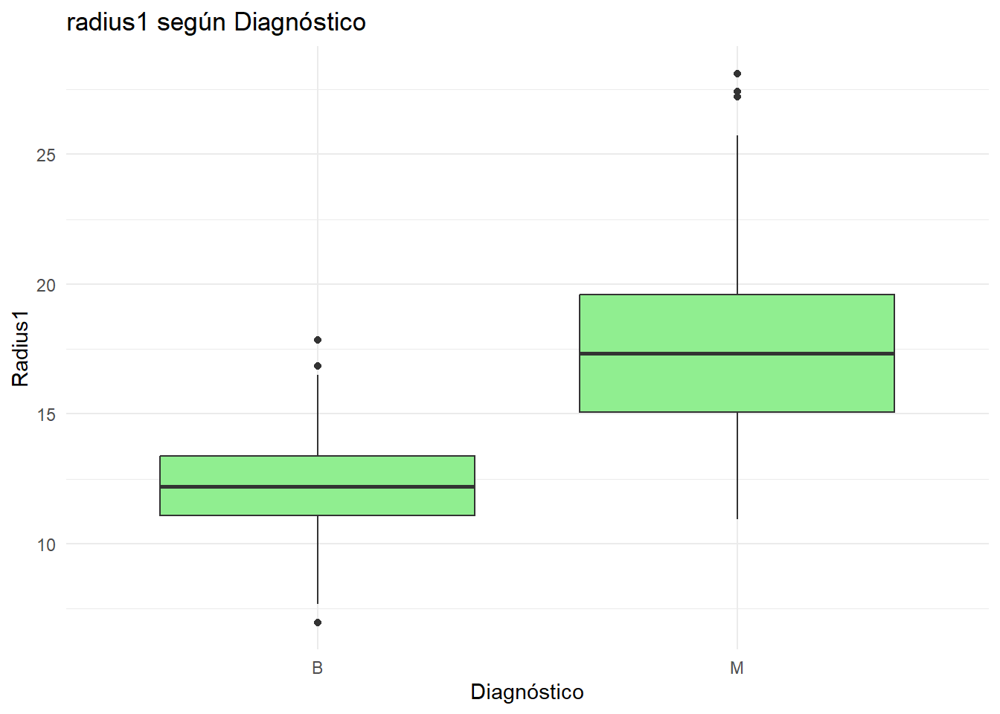
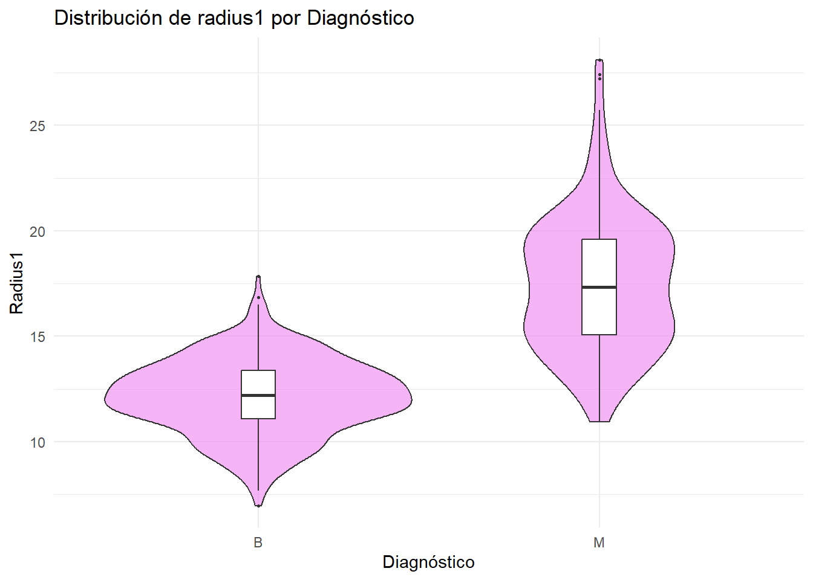
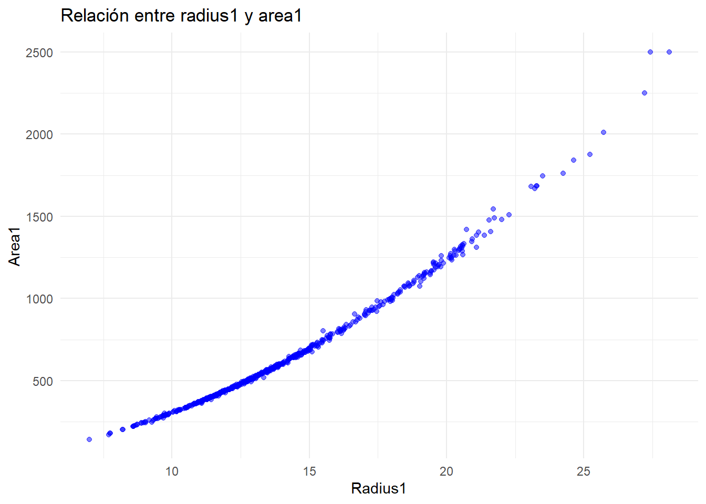
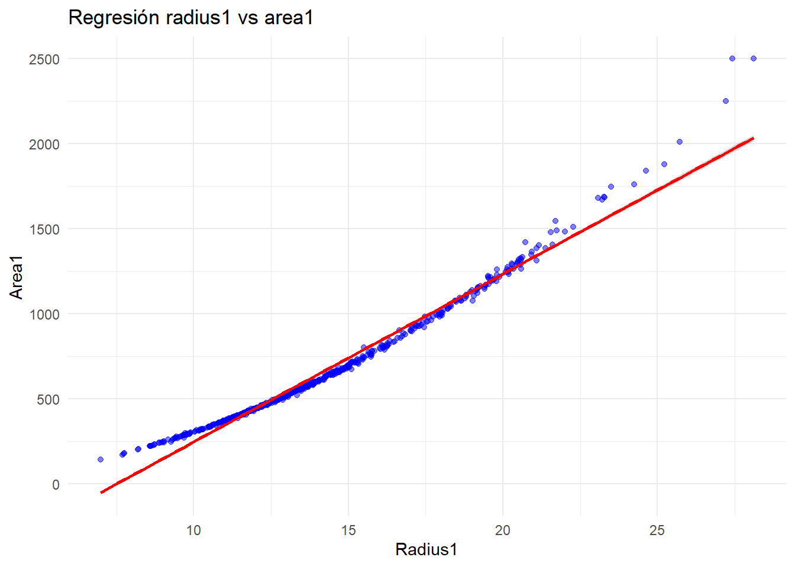
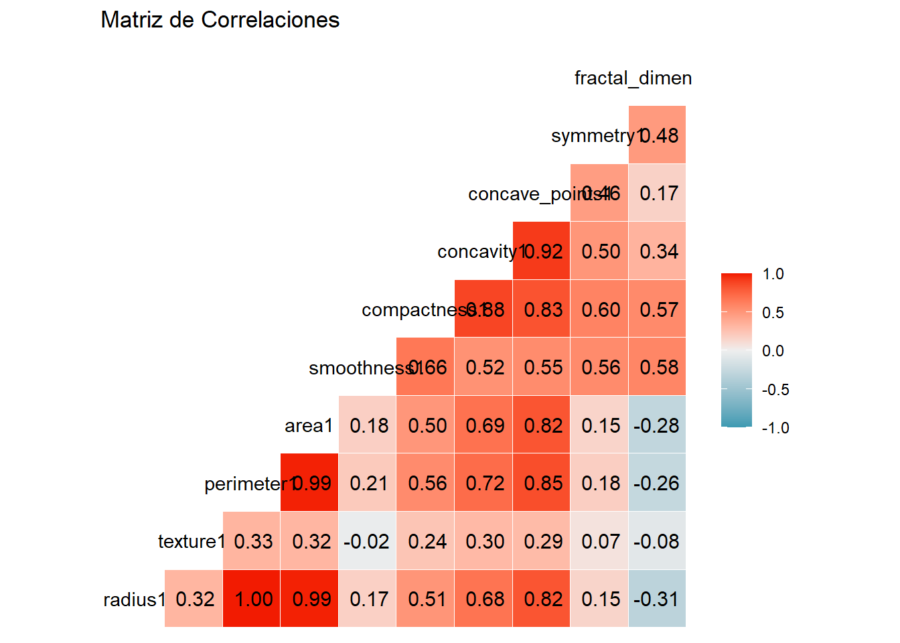
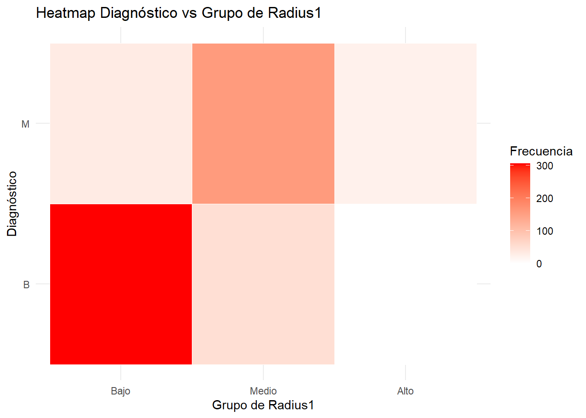

Chapter 6 Análisis bivariante
6.1 Variable numérica vs. categórica
# Boxplot
ggplot(df, aes(x = Diagnosis, y = radius1)) +
geom_boxplot(fill = "lightgreen") +
theme_minimal() +
labs(title = "radius1 según Diagnóstico", x = "Diagnóstico", y = "Radius1")
# Violin plot
ggplot(df, aes(x = Diagnosis, y = radius1)) +
geom_violin(fill = "violet", alpha = 0.6) +
geom_boxplot(width = 0.1, fill = "white", outlier.size = 0.5) +
theme_minimal() +
labs(title = "Distribución de radius1 por Diagnóstico", x = "Diagnóstico", y = "Radius1")
El gráfico compara el radio de los tumores B (benignos) y M (malignos). Se aprecia que, aunque la mayoría de los tumores son de tipo B, los de tipo M se concentran en valores significativamente más altos, incluso con datos extremos más elevados.
Los tumores tipo B presentan una distribución más compacta, mientras que los tipo M muestran mayor variación en sus radios. Los primeros tienen un comportamiento más homogéneo, mientras que los segundos presentan mayor dispersión.
Los puntos negros sobre las cajas (que representan valores atípicos) destacan la presencia de tumores excepcionalmente grandes, principalmente en los tipo M.
En síntesis, los resultados sugieren que:
- Los tumores malignos (tipo M) tienden a tener radios mayores y mayor variabilidad
- Los benignos (tipo B) presentan un comportamiento más compacto y radios menores.
6.2 Variable numérica vs. numérica
# Scatter plot básico
ggplot(df, aes(x = radius1, y = area1)) +
geom_point(alpha = 0.5, color = "blue") +
theme_minimal() +
labs(title = "Relación entre radius1 y area1", x = "Radius1", y = "Area1")
# Scatter plot con regresión
ggplot(df, aes(x = radius1, y = area1)) +
geom_point(alpha = 0.5, color = "blue") +
geom_smooth(method = "lm", color = "red") +
theme_minimal() +
labs(title = "Regresión radius1 vs area1", x = "Radius1", y = "Area1")## `geom_smooth()` using formula = 'y ~ x'
## Correlación entre radius1 y area1: 0.9873572# Mapa de correlaciones
numeric_vars <- df %>% select(where(is.numeric), -ID)
ggcorr(numeric_vars, label = TRUE, label_round = 2) +
labs(title = "Matriz de Correlaciones")
Existe una relación evidente entre el radio1 y el área1, específicamente una correlación positiva: cuando el radio aumenta, el área también lo hace.
La matriz de correlación muestra que hay pocas correlaciones negativas (ninguna significativa). En general, las variables presentan correlaciones positivas, evidenciado por el predominio del color rojo que indica valores cercanos a 1. Esto tiene sentido, ya que la mayoría están relacionadas con el tamaño.
Como excepción, la variable textura muestra valores cercanos a 0, indicando que no tiene una correlación significativa con las demás variables.
6.3 Variable categórica vs. categórica
# Tabla cruzada de diagnóstico con grupos de radius1
radius_groups <- cut(df$radius1, breaks = 3, labels = c("Bajo", "Medio", "Alto"))
tab <- table(df$Diagnosis, radius_groups)
cat("Tabla cruzada Diagnóstico vs Grupos de Radius1:\n")## Tabla cruzada Diagnóstico vs Grupos de Radius1:## radius_groups
## Bajo Medio Alto
## B 306 51 0
## M 32 158 22##
## Proporciones:## radius_groups
## Bajo Medio Alto
## B 0.53778559 0.08963093 0.00000000
## M 0.05623902 0.27768014 0.03866432# Heatmap
tab_df <- as.data.frame(tab)
colnames(tab_df) <- c("Diagnosis", "RadiusGroup", "Freq")
ggplot(tab_df, aes(x = RadiusGroup, y = Diagnosis, fill = Freq)) +
geom_tile(color = "white") +
scale_fill_gradient(low = "white", high = "red") +
theme_minimal() +
labs(title = "Heatmap Diagnóstico vs Grupo de Radius1",
x = "Grupo de Radius1", y = "Diagnóstico", fill = "Frecuencia")
El heatmap muestra la relación entre el diagnóstico de tumores benignos (B) y malignos (M) y su clasificación en grupos de Radius1 (Bajo, Medio y Alto), evidenciando que la mayor concentración de casos corresponde a tumores benignos con radios bajos, mientras que los malignos se presentan con mayor frecuencia en radios medios y en menor proporción en radios bajos; por otro lado, los tumores con radios altos son poco comunes en ambos diagnósticos, lo que sugiere que los radios pequeños predominan en los tumores benignos y que los malignos tienden a concentrarse más en radios intermedios que en extremos.